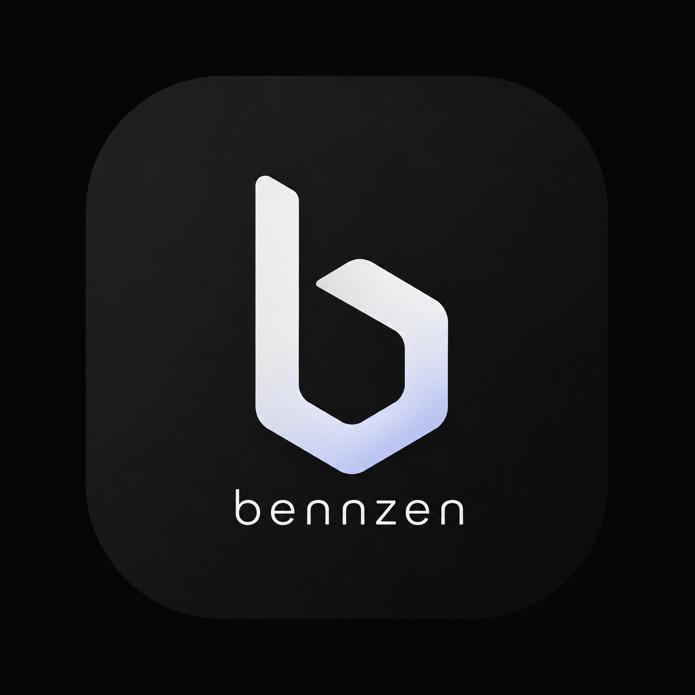

Sin sección activa.
Mantén espacio para hablar
Haz clic en cualquier perfil para iniciar la sesión de inmediato.
🔒 Se guarda en este navegador (localStorage). El .env del servidor actúa de fallback.
.env
💡 Sin límite de caracteres: Bennzen segmentará y sintetizará todo el texto en voz alta con audio continuo.